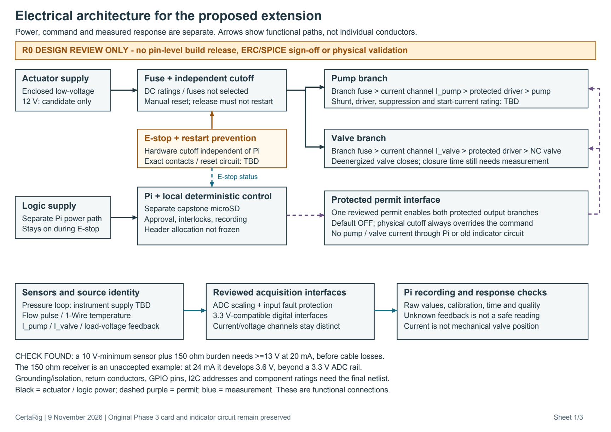
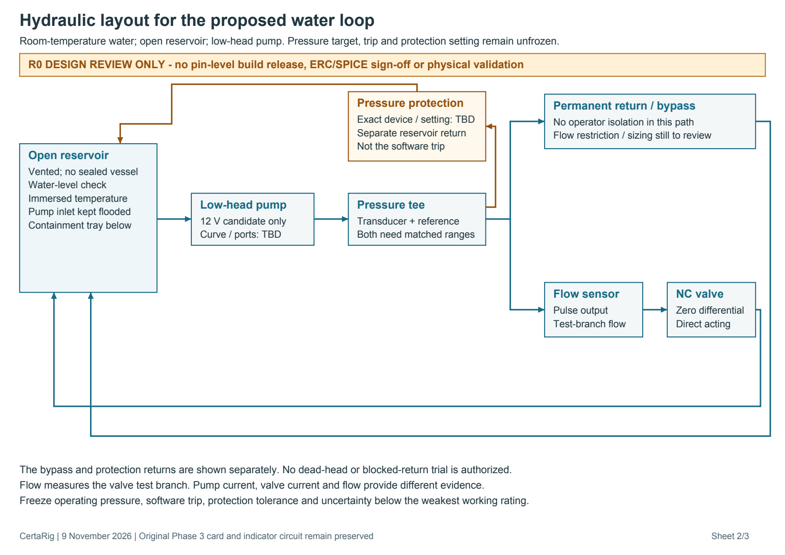
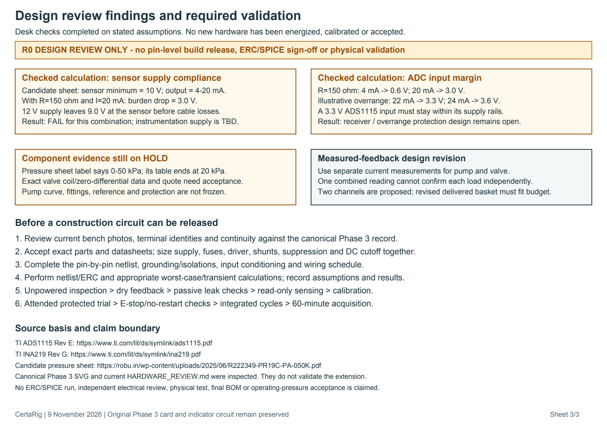

Design review only. Functional architecture, not a pin-level construction circuit. Desk calculations and drawing layout checked; electrical design and physical validation remain open.
Download three-sheet PDF · Review notes · Validation status


